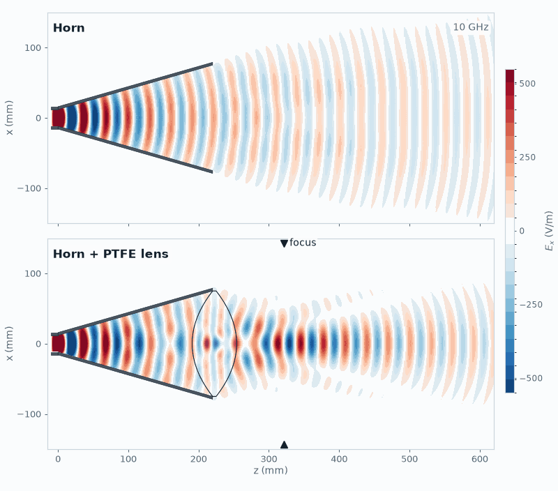
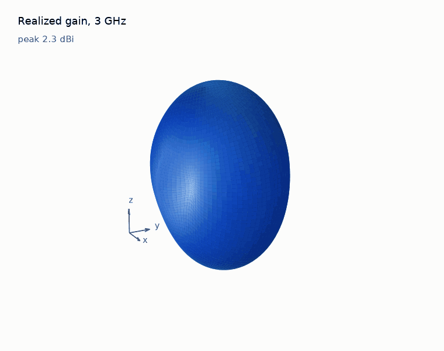

Antennas · RF & microwave
Antenna design & full-wave electromagnetic simulation
My antenna work spans horn and ultra-wideband (UWB) antennas, millimeter-wave radiators and waveguide mode converters. I design antennas and verify them with full-wave modeling in COMSOL, CST Microwave Studio and Ansys HFSS, with selected designs then validated against measurement.
3D-printed horn with a PTFE focusing lens (10 GHz)
A conical horn spreads its beam once the wave leaves the aperture. A biconvex PTFE lens placed in the aperture turns the diverging wavefront into a converging one, so the power gathers in a spot about 100 mm in front of the horn. The horn was 3D-printed and metallized, and the lens was machined from PTFE (relative permittivity 2.2).



In the model the on-axis power peaks 101.5 mm in front of the aperture. The focal spot is about 27 mm wide at half power (0.9 λ at 10 GHz), against 138 mm for the horn alone at the same distance. The measured axial power also peaks about 100 mm from the aperture. The model is 2D axisymmetric, with perfectly conducting walls and a lossless lens.


Antipodal Vivaldi antenna (simulation, 3 GHz design target)
A Vivaldi antenna is a slot that widens exponentially toward its open end. Each frequency radiates from the part of the flare where the slot is about half a wavelength wide, so one antenna covers a wide band. In the antipodal version the two flares are printed on opposite sides of the board and fed from a microstrip line through a tapered ground. This design uses a 60 × 70 mm Rogers RO4003C board with a 50 mm aperture, half a wavelength at 3 GHz.



In the simulation |S11| stays at or below −10 dB from about 3.6 GHz to the end of the sweep at 12 GHz, with a narrow region near 5 GHz where it rises to about −9 dB. The band starts 20% above the 3 GHz set by the aperture width. Boresight realized gain is about 8.3 to 9.1 dBi between 6 and 11 GHz. The copper is modelled as a zero-thickness perfect conductor and the feed as a lumped port without a connector, and the antenna has not been built or measured.

3D-printed rectangular-to-circular waveguide mode converter (X band)
A rectangular waveguide carries the TE10 mode, while a circular horn is fed with TE11. The converter changes the cross-section over 150 mm, from a standard X-band rectangular guide (22.86 × 10.16 mm) to a circular guide of 11.9 mm radius. Two prototypes, one printed in plastic and one in metal, were measured on a vector network analyzer from 8 to 12 GHz and compared with CST Microwave Studio.

Antenna measurements
The lab has an anechoic chamber, a vector network analyzer and an XYZ scanning system. I measure S-parameters and radiation patterns and compare them with the simulation of the same structure. The XYZ system also maps the field near an antenna, for example the power along the axis of the lens horn above.

Design capability
The full-wave model yields the reflection coefficient (return loss, S-parameters), near- and far-field radiation patterns, gain, aperture efficiency and bandwidth. This supports horn and UWB antennas, waveguide-to-radiator transitions and rectangular-to-circular mode converters, including 3-D-printed millimeter-wave hardware: I have designed and experimentally validated Ka-band horn antennas and X-band mode converters.
Selected antenna publications
- Balal N, Michael A. 3D-Printed Rectangular-to-Circular Waveguide Mode Converters: Design, Fabrication and Experimental Validation at X-Band. 2025 Photonics & Electromagnetics Research Symposium, Fall (PIERS-Fall), pp. 1–5 (2025). doi:10.23919/PIERS-Fall62445.2025.11394043
- Michael A, Balal N. 3D-Printed Circular Horn Antenna with Dielectric Lens for Focused RF Energy Delivery. Electronics 14, 3191 (2025). doi:10.3390/electronics14163191
Applied research and technical capabilities
- Full-wave electromagnetic modelling
- Horn, UWB, and millimeter-wave antenna design
- Waveguide transitions and mode converters
- S-parameter, near-field, and far-field analysis
- Optimization and simulation-to-measurement comparison
Technical questions and research collaboration: nezahb@ariel.ac.il